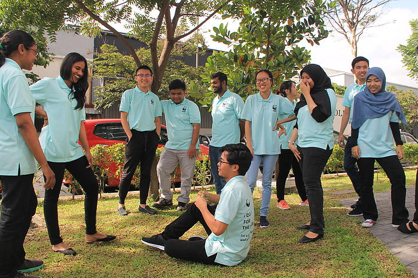
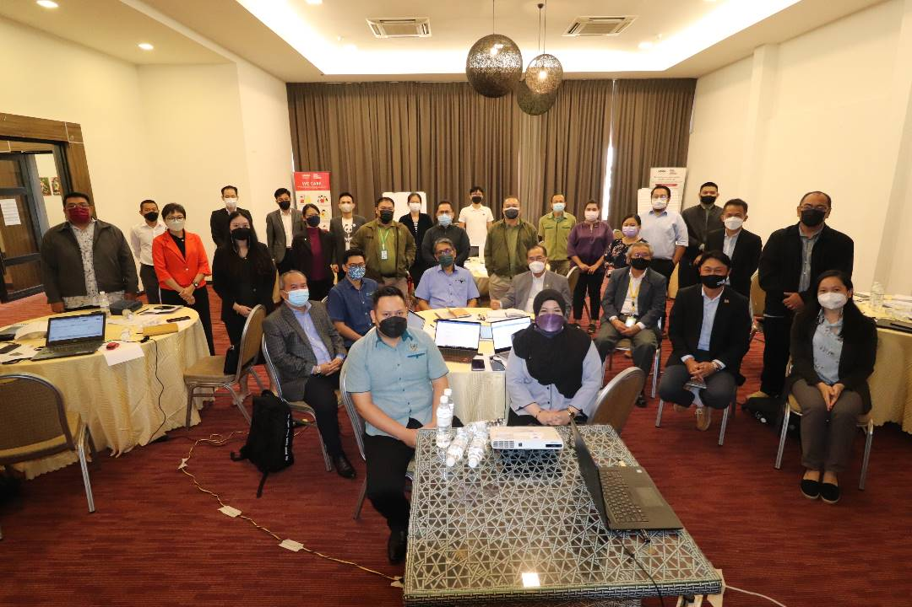

GUARDIAN OF ENVIRONMENT
FORESTForests cover 30% of the Earth’s surface and contain much of the biological diversity found on land – they harbour over two-thirds of known terrestrial species, many of which are threatened. |
FOODDue to irresponsible fishing practises to feed our insatiable desire for seafood, Malaysia's fisheries supplies have declined by over 90%. Increasing greenhouse gas (GHG) emissions from human activities such as food production and waste are also having a significant influence on the ocean. Landfills are Malaysia's third largest GHG emitter, with food waste playing a significant role. |
PEOPLEMany of the world's threatened ecosystems and places of high biodiversity are also home to Indigenous Peoples and local communities whose livelihoods and traditions are inextricably linked to nature. They have traditional knowledge and expertise in managing natural resources responsibly, and they are the natural caretakers of the environment. Securing their rights and well-being is critical to preserving biodiversity and supporting sustainable development. |
OUR TEAMWe are a team of passionate designers and developers who are dedicated to our work. We are always learning and evolving, and we are always looking for new ways to improve our skills. |
|---|
Help Protect People and Our PlanetEveryone, animals and humans alike, need healthy forests, rivers and seas to survive. By protecting Malaysia’s natural ecosystems and conserving our priceless biodiversity,The Guardian of Enviroment is helping to protect our livelihoods, food security and freshwater supply, thus securing our good quality of life and our children’s future. |
Humanising Marine Conservation - Sharing Our Love for Sharks and Rays at the Sabah Shark and Ray Initiative ShowcaseBy Serena Adam (Marine Conservation Officer, Shark) and Marina Aman Sham (Communicator, Short-Term Contract), Marine Programme, GOE Malaysia. Unless you’re a marine life enthusiast, it’s likely that in terms of species identification, sharks and rays are lumped together as just that: sharks and rays. Can you tell the difference between a Smooth hammerhead and Great hammerhead (shark) at first glance? The Guardians of Enviroment was amongst like-minded friends from the Sabah Shark and Ray Initiative (SSRI) who spent a weekend in June with a key goal in mind: to share our passion and love for sharks and rays (and all marine life, for that matter) with those who walked through the Tanjung Aru Marine Ecosystem (TAME) centre’s doors, in Kota Kinabalu, Sabah. We welcomed school students from both local and international schools, alongside many others, who we hope gained much knowledge and had a lot of fun! |
|
 |  |
|---|